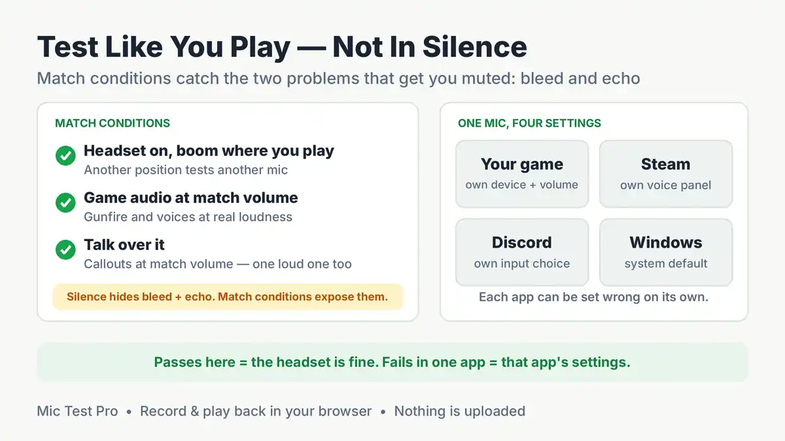
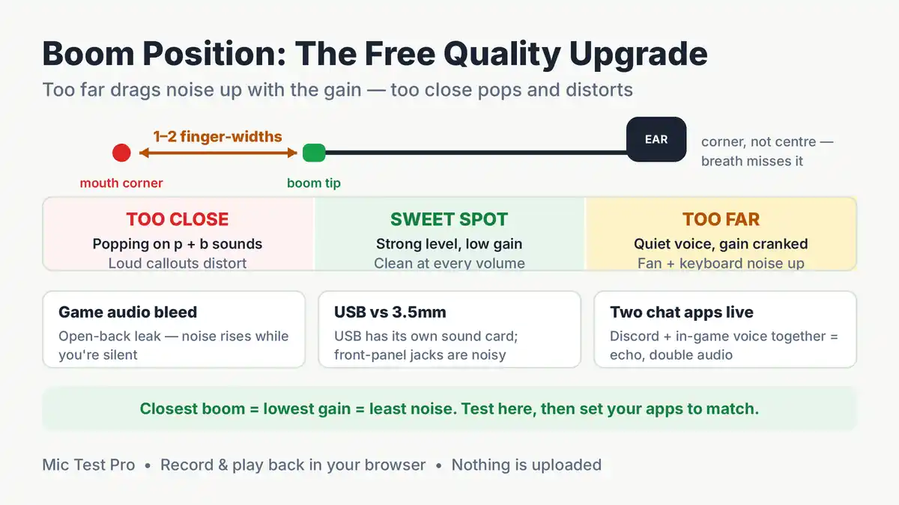
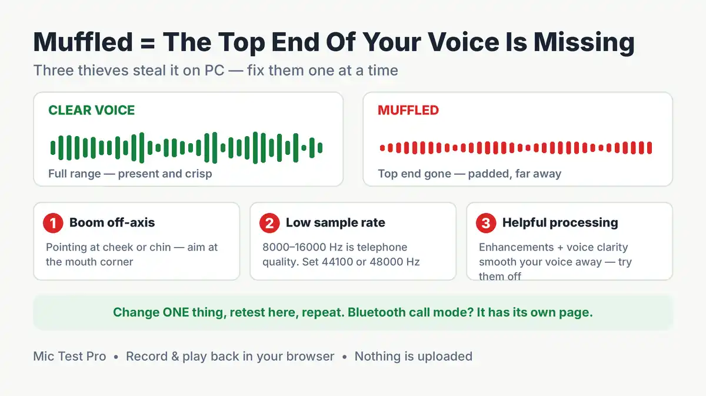
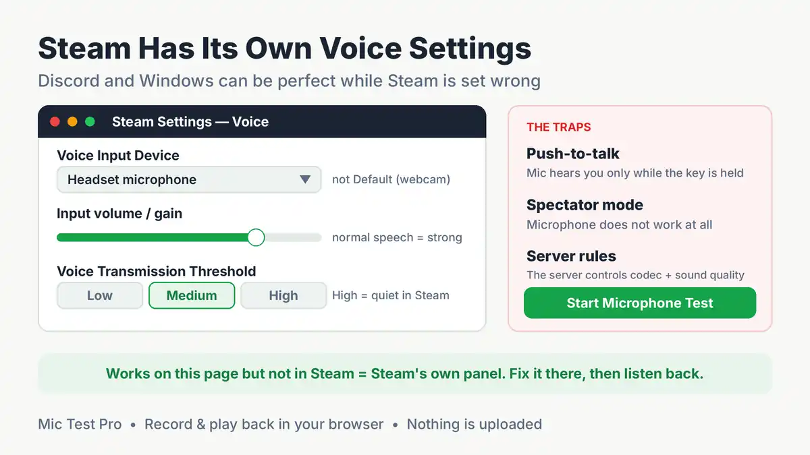

Why Test A Gaming Headset Mic?
Short answer: in competitive games, unclear callouts cost rounds, and your teammates will not file a polite bug report — they will just tell you your mic is trash.

This test lets you confirm your headset mic is capturing your voice at a solid input level, without excessive noise from a fan, keyboard, or game audio bleed, before you launch your game client. It also gives a real latency reading pulled from your browser's audio engine, which matters more for live voice comms than for casual chat apps.
The important gaming detail: test under match conditions, not in silence. Put your headset on the way you actually play, run some game audio at your normal volume, and talk over it. That is the only way to catch game audio bleed and echo — the two problems that make teammates mute you — before they do.
And test here before you open your game's settings. Games, Steam, Discord and Windows each keep their own input device and volume, so a mic can be perfect in three of them and dead in the fourth. This page is the neutral ground: if it works here, the hardware is fine and you only have to find which app is set wrong.
How To Test Your Gaming Headset Mic
Put your headset on the way you normally would while playing, boom in your usual position. Testing in a different position than you play in tests a different microphone, effectively.
Click "Start Mic Test" and allow microphone access in your browser.
Call out a few practice lines at match volume — including one loud callout — and watch the waveform and input level. Normal speech should move the level strongly; the loud callout should not distort.
Now stay silent with your game audio playing at normal volume and watch the noise reading. If it climbs with nobody speaking, your mic is picking up your own game sound: lower the volume or fix the leak before your teammates hear double audio.
If the noise level reads high, adjust the boom position (closer means you can lower the gain, which lowers everything else too), or enable noise suppression in your game or headset software, then test once more before launching.
The latency reading is shown in milliseconds (ms): the delay between speaking and your browser receiving the sound. Lower is better for live comms, and wired headsets are usually the fastest.
Record A Callout And Hear It Back
Meters show levels; a recording shows what your teammates actually get. Press Record Voice, make a few callouts at match volume — including one loud one — then stop and listen to the playback. If the loud callout distorts, or you can hear your game audio behind your voice, you have found it before your squad does. Recordings run up to 60 seconds, you can download the clip as a WAV file, and the audio never leaves your browser.
Two more checks live on the same panel. Test Speakers plays a short test sound through your chosen output, so you can confirm both ears of the headset work before a match. Hear Yourself plays your own voice back live while you speak — the same idea as sidetone or mic monitoring in headset software.
What Affects Gaming Mic Quality
Boom Position
The biggest free upgrade in gaming audio. Too far from your mouth lowers your input level and forces the gain up, which drags fan and keyboard noise up with it; too close causes popping on plosives and distorted loud callouts. One to two finger-widths from the corner of your mouth is the sweet spot for most headset booms.
Game Audio Bleed
Loud in-game sound from open-back headphones can leak into the mic — gunfire, explosions and your teammates' voices included. A gaming sound test catches it fast: it shows up here as a rising noise reading while you are silent with audio playing. Closed-back headsets, lower volume, and a closer boom all reduce it.
USB vs 3.5mm
USB headsets typically have their own sound card, often giving cleaner input than a shared 3.5mm jack, and they bypass the noisy front-panel audio wiring inside a PC case. A 3.5mm headset through a good motherboard or a USB dongle can be just as clean — test both routes here if your headset offers them and keep the quieter one.
Chat App Overlap
Running Discord and an in-game voice chat together can cause echo or double audio when both are live on the same mic and speakers. Pick one voice home per match, mute the other, and check its input device matches this test — each app keeps its own device choice, and the one you forgot is usually the wrong one.

Gaming Mic Problems: Problem, Cause, Fix
| Problem | Most likely cause | Fix | Check on this page |
|---|---|---|---|
| Mic sounds muffled or far away | Boom too far off-axis, a low Windows sample rate, or enhancements smoothing the voice | Reposition the boom first. Then set the mic's default format to 44100 Hz or 48000 Hz in its Windows properties and turn enhancements off. Full walkthrough in the muffled section below. | Waveform looks small and flat at normal volume |
| Static, buzzing or crackling | Interference on a 3.5mm front-panel jack, a shared USB hub, a damaged cable, or gain set too high | Plug USB straight into the motherboard, try the rear 3.5mm jack, wiggle-test the cable during this test, and lower the gain. | Noise Level jumps while you are silent |
| Teammates hear your game audio | Open-back leak, loud speakers, or the input set to Stereo Mix instead of your mic | Check the input device name in the chat app. If it is your real mic, lower game volume, move the boom closer, or use push-to-talk. | Noise Level rises while game audio plays |
| Mic works on Discord, dead in Steam | Steam has its own input device, threshold and push-to-talk settings | Steam Settings > Voice: pick your mic, lower the transmission threshold, and run Steam's Start Microphone Test. | This page hears you — the fault is in Steam |
| Quiet only in Steam | Steam's input volume/gain slider or transmission threshold is set against you | Raise Input volume/gain and set the Voice Transmission Threshold to Medium or Low in Steam Settings > Voice. | Input Level normal here, low in Steam |
| Voice distorts when you shout | Input gain too high — the signal clips at loud moments | Lower the gain in Windows or your headset software and test again here at full callout volume. | Waveform hits a solid block when you shout |
| Mic cuts out mid-sentence | A noise gate or aggressive suppression in the chat app closing on quieter speech | Lower the sensitivity threshold in the app, or turn its noise removal down a level, then retest. | Waveform shows gaps mid-sentence |
| Teammates hear an echo | Headphone leak or two voice apps live at once | Headphones on, volume down, one voice app muted. Enable echo cancellation in your chat app if it offers it. | Noise Level jumps when others speak |
Why Gaming Mics Sound Muffled (And How To Fix It On PC)
Short answer: muffled means the top end of your voice is missing, and on PC the three usual thieves are boom position, a low sample rate, and processing that was meant to help.

Start with position, because it costs nothing. A boom pointing at your cheek, your chin, or hovering near your nose records you off-axis, and headset mics lose clarity fast off-axis. Bring it to the corner of your mouth, a finger-width or two away.
Next, the sample rate — the silent killer of cheap-sounding mics. Windows lets each recording device run at its own rate, and some headsets install at 8000 Hz or 16000 Hz, which is telephone quality. Open Sound settings, select your mic, open its properties, and on the Advanced tab set the default format to 2 channel, 44100 Hz or 48000 Hz. If your voice suddenly sounds present instead of padded, that was it.
Then turn off help you did not ask for. In the same properties window, disable audio enhancements; in headset software and chat apps, try a round with noise suppression and 'voice clarity' features off. Every one of those processors can mistake the edges of your voice for noise. Test here after each single change — changing three things at once tells you nothing.
One cause does not belong to this page: a Bluetooth headset that drops into low-quality call mode when its mic activates. It is real, it is common, and it has a dedicated fix path on the Bluetooth mic test page.
Works Everywhere Except Steam? Check Steam's Voice Settings
Short answer: Steam does not borrow your Discord settings. It has its own voice panel, and it can be set wrong while everything else on your PC is right.

Open Steam Settings > Voice (the same panel lives behind the gear icon in your Friends list). Set Voice Input Device to your headset mic explicitly rather than leaving it on a default that may point at a webcam. Set your Input volume/gain so normal speech registers strongly, and set the Voice Transmission Threshold to Medium or Low — on High, only loud speech opens the mic, which is why some players are 'quiet only in Steam'. Finally, use the Start Microphone Test button on that screen and listen back before joining a lobby.
If you use push-to-talk in Steam, the test only hears you while the hotkey is held, and so does every game that inherits it. More than one 'broken mic' has turned out to be a push-to-talk key nobody remembered setting. Two more Steam rules: a server can control whether your mic works at all and what codec and sound quality it gets, and your microphone will not work while you are in Spectator mode.
More Mic Tests
Gaming Mic Test FAQs
Why do my teammates say my gaming mic sounds bad?
Often it's boom-arm positioning, game audio bleeding into the mic, or a headset mic with a narrow frequency range. Check your input level and noise reading here first: a healthy level with low noise in this test means the problem is in your game or chat app settings, not the headset.
Why does my gaming mic sound muffled or far away?
Muffled usually means the high frequencies of your voice never arrived. The usual causes, in order: the boom is too far from your mouth or pointing at your cheek instead of your mouth corner; Windows has the mic running at a low sample rate; sound enhancements or 'voice clarity' processing are smoothing your voice away; or the headset is connected over Bluetooth and has dropped into its low-quality call mode — that last one has its own page here, the Bluetooth mic test, because the cause and fix are specific.
How do I fix a muffled microphone on PC?
Work through it in this order. One: reposition the boom, one to two finger-widths from the corner of your mouth. Two: check the sample rate — in Windows, open Sound settings, choose your mic, and in its properties (Advanced tab in the classic panel) set the default format to at least 44100 Hz or 48000 Hz; an 8000 Hz or 16000 Hz setting sounds like a phone call from 1995. Three: turn off audio enhancements for the mic in the same properties window and test again. Four: re-run this test after each change so you can hear which one actually fixed it.
Why is there static or buzzing in my gaming mic?
Static and buzz are usually electrical, not settings. Common sources: a 3.5mm jack picking up interference inside the PC case (front-panel jacks are the worst offenders), a USB mic sharing a hub with power-hungry devices, a damaged cable that crackles when it moves, or the input gain set so high that the noise floor becomes audible. Test with this page while touching nothing: if the noise reading is high in silence, swap ports, plug USB devices straight into the motherboard, and lower the gain before blaming the mic.
Why can my teammates hear my game audio through my mic?
Two routes: sound leaking out of open-back headphones or loud speakers and into the mic, or a software loop where your system output is being sent as your input — the classic culprit is an input device set to Stereo Mix or a virtual cable instead of your actual mic. Check the input device name in your chat app first. If it is your real mic, lower the game volume, move the boom closer so you can speak quieter, or switch to push-to-talk.
Why do my teammates hear an echo of the game or themselves?
Echo means audio that came out of your headphones or speakers went back into your mic. Open-back headsets leak the most, especially at high volume. Lower the volume, move the mic boom closer so your voice beats the leak, enable echo cancellation in your chat app if it has one, and check that you do not have both in-game voice and a chat app like Discord sending the same audio — two live voice paths double everything.
Why does my mic work on Discord but not in Steam?
Because Steam keeps its own voice settings and does not always follow Discord's or Windows' choices. Open Steam Settings > Voice (or the gear in your Friends list > Voice) and check three things: the Voice Input Device is your headset mic, not Default left pointing at the wrong device; the voice transmission type is not push-to-talk without a key you press; and the Voice Transmission Threshold is not set so high that your normal speech never opens the mic. Steam has a Start Microphone Test button on the same screen — use it after changing anything.
Why am I quiet only in Steam games?
Steam applies its own input volume/gain slider and a transmission threshold on top of your system level. If this test shows a strong level but Steam shows a weak one, raise the Input volume/gain in Steam Settings > Voice and lower the Voice Transmission Threshold to Medium or Low so quieter speech still transmits. Also check the game itself: many games have a separate voice volume and threshold in their audio options that override nothing but add a second gate.
Why does my mic cut out or distort when I shout?
Distortion at high volume is clipping: the signal is too hot and the tops of the waveform are being cut off. Lower the input gain (in Windows sound settings or your headset software) and move the boom slightly further away, then test here at your loudest callout volume — the level should peak high but the sound should stay clean. Cutting out entirely at loud moments is usually a noise gate or suppression feature deciding your shout is noise; turning off aggressive noise removal in your chat app fixes that version.
Does latency matter for a gaming headset mic?
Yes, for real-time team communication. High latency delays teammates hearing you — this test measures it directly from your browser's audio engine. Wired connections are consistently the lowest; Bluetooth adds a noticeable delay on top of everything else, which is one reason competitive players stay wired.
Should the mic boom be close to my mouth?
Most gaming mics work best about one to two finger-widths from the corner of your mouth, reducing breathing and pop sounds while keeping speech clear. Corner, not centre: directly in front of your lips puts every breath and plosive (p and b sounds) straight into the capsule.
How do I test my microphone on PS5?
On PS5, go to Settings > Sound > Microphone, choose your Input Device and Adjust Microphone Level — the input bar should respond when you speak. The DualSense controller has a built-in mic with a physical mute button, so check that first if nobody hears you: press the mute button on the controller to unmute. If the bar does not move, try the headset mic instead — and run this browser test first to prove the headset itself works.
Can I test my headset speakers with this tool too?
Yes. Press Test Speakers and the tool plays a short test sound through your chosen output. If you hear it clearly in both ears, the headset's speakers work; if one side is silent, check the cable, the balance setting and the output device before blaming the game. Testing speakers and mic on the same page catches a one-sided headset before a match does.